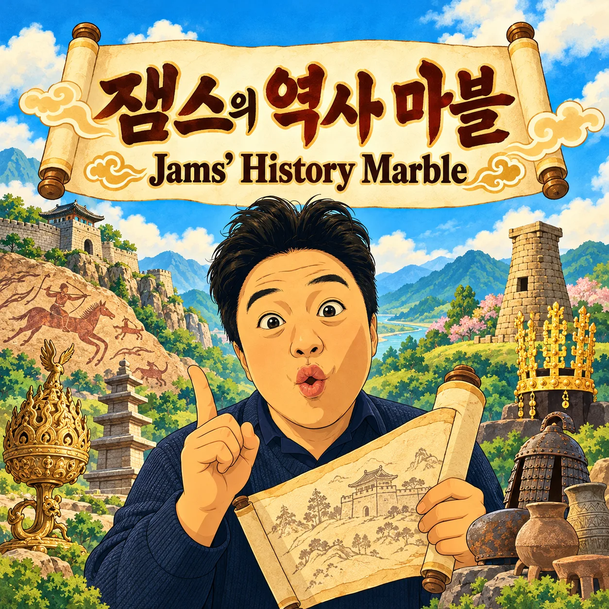

잼스의 역사 마블 · Jams’ History Marble🚪 게임 입장
방 코드를 입력하면 그 방의 팀 목록이 나타나요.
👩🏫 교사: 새 방 설정 (시대·팀 수·팀 이름)
팀 이름은 시대 주제로 붙인 놀이용 이름이에요. 그 시대에 실제로 그만큼의 나라가 있었다는 뜻은 아니에요. 방을 만든 뒤에는 바꿀 수 없어요.
교사는 새 방을 만들고 코드를 알려 주세요. 학생은 아이패드에서 나라와 중복되지 않는 별명을 선택합니다. 나라별 최대 10명입니다.
📜 역사 마블 게임 규칙
🎯 목표
문제를 맞혀서 땅(거점)을 많이 차지하고, 거점 국력·라운딩·점령 거점 수·카드 점수를 합한 총점을 가장 높게 만들어요!
1. 처음 시작해요
모든 땅은 회색(중립)으로 시작해요. 각 팀에서 가장 먼저 입장한 학생 한 명이 주사위를 굴려 팀 순서를 정해요. 내 차례가 되면 내 화면에 큰 알림이 떠요.
2. 우리 차례가 되면
팀마다 말이 하나예요. 차례마다 팀 안에서 대표(주사위 담당)가 돌아가며 바뀌고, 대표가 주사위를 굴려 우리 팀 말을 움직여요. 다른 친구들도 읽기·근거, 출제, 검토·꾸미기 역할을 돌아가며 맡아요.
3. 도착한 땅에 따라
회색 땅·다른 팀 땅: 모든 팀이 같은 시대 문제를 함께 풀어요. 차례인 팀이 맞히면 그 땅을 차지해요(LV1).
우리 땅: 연구 +1을 받고 바로 다음 차례로 넘어가요.
기회·사건 칸: 한국사 카드를 읽어요.
4. 문제를 풀 때 (모든 팀 동시)
처음 8초는 혼자 생각하고, 그다음 팀끼리 이야기해요. 팀 대표가 마감 전까지 최종 답을 눌러요(바꿀 수 있어요). 다른 친구는 연습 답을 골라 두고 근거를 말해요. 먼저 맞혀도 일찍 끝나지 않고 모든 팀이 마감까지 풀어요. 차례인 팀이 맞히면 땅 + 연구 1, 다른 팀이 맞히면 연구 2! 틀리거나 못 내도 벌점은 없어요. 결과와 해설은 마감 때 한 번에 보여요.
5. 점수(국력)와 연구
땅마다 1~10점의 국력이 있어요. 차지하면 올라가고 빼앗기면 내려가요. 한국사 기회·사건 카드 점수, 출발점 통과 1회 1점, 차지한 땅 1곳 1점도 더해요. 💎 연구 포인트(최대 20)는 점수가 아니라 공사 재료예요.
6. 우리 땅 공사
차례와 상관없이 언제든 할 수 있어요. LV2 배움터: 연구 2 + 우리 팀이 만든 문제(친구 검토 → 선생님 승인) → +2점. LV3 상징: 연구 3 + 상징 그림과 역사적 의미 한 줄 → +3점. 공사는 한 팀에 한 건씩 검토해요. 땅을 빼앗기면 공사는 처음으로 돌아가요. 사진·이름 꾸미기는 점수 없이 꾸미기만 돼요.
7. 꼭 지켜요
얼굴 사진, 이름, 전화번호 같은 개인정보는 올리지 않아요. 별명은 친구들이 보기 좋은 말로 써요. 이긴 팀도 진 팀도 서로 응원하고 박수를 쳐요.